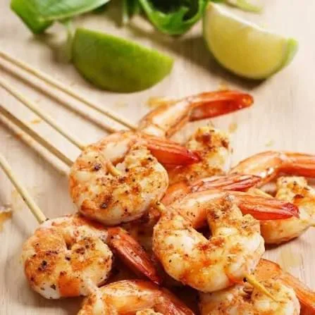
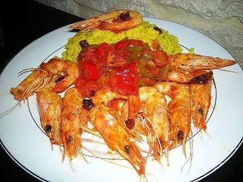
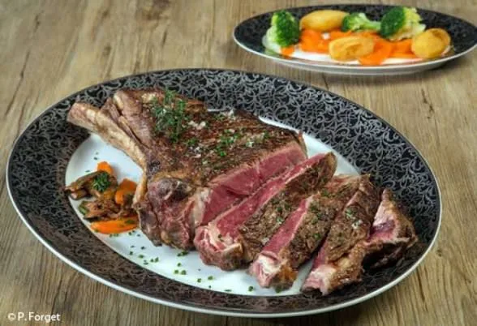

Très demandé
Brochettes de gambas
Bien grillées, servies chaudes — parfait pour partager à deux ou entre amis.


Bacodjicoroni ACI · au bord du fleuve Niger
Grillades, poisson, cocktails — une table de quartier à Bamako, ouverte tous les soirs de 16h à 3h.

Bien grillées, servies chaudes — parfait pour partager à deux ou entre amis.

Un classique de la maison quand on veut quelque chose de généreux et parfumé.

À partager en famille ou entre collègues après le travail.
Notre adresse à Bamako
Depuis Bacodjicoroni ACI, King Aqua Lounge accueille les habitués du quartier, les familles du coin et les groupes qui veulent bien manger sans cérémonie.
On fait des grillades, du poisson, des fruits de mer et des cocktails — avec une terrasse quand la chaleur de Bamako retombe un peu.
« On préfère que vous repartiez contents, pas impressionnés. » — l’équipe

La terrasse
La lumière baisse sur l’eau, les conversations reprennent, et la soirée avance à son rythme — sans précipitation.
Ce que les clients reprennent souvent
Pourquoi passer chez nous
Viandes et poissons servis chauds, assaisonnements francs, portions généreuses.
Un cadre plus frais le soir, avec la vue sur le Niger — idéal pour se détendre.
Vous appelez, vous passez sur place, ou vous commandez sur WhatsApp. On répond vite.
Comment venir
Le restaurant est au bord du fleuve Niger. Si c’est votre première visite, un coup de fil ou un message WhatsApp et on vous guide.
Quartier connu de Bamako, côté fleuve.
Le lien vous amène directement à la devanture.
Appelez le 77 77 74 77 pour garder une table le week-end.
Le bar

Dehors
Avis clients
Retours recueillis auprès de clients réguliers et de commandes WhatsApp — pas une note inventée.